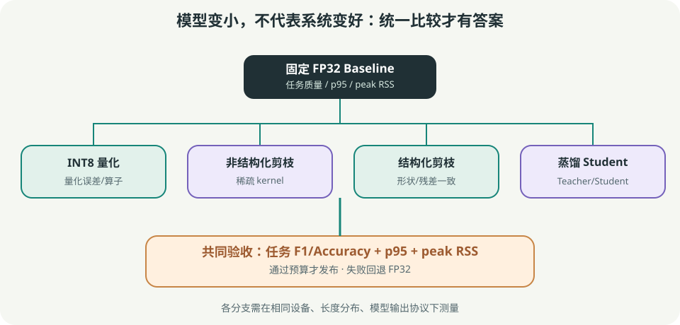

1. 先写部署合同，再谈“模型压缩 4 倍”
模型落地通常同时受四个约束：预测质量、设备延迟、峰值内存和发布包体积。一个中文 NER 模型压缩后体积变为原来的 1/4，但如果 p95 延迟不变或少数实体的召回骤降，这并不是有效的部署改进。压缩率、端到端提速和质量保留率是三个独立指标。
规定真实目标设备、CPU/GPU/NPU 执行后端、batch size、长度分布、线程数、内存预算和输入预处理。训练后的 Encoder 可能经过蒸馏、量化、剪枝或架构变更，哪一步带来什么收益必须用 ablation 区分。
2. 四种压缩路线改动的是不同对象
蒸馏：训练更小的 student 模仿 teacher；可以降低层数/宽度，但有额外训练成本与 teacher 偏差传播风险。权重量化：把部分 float 权重/激活表示为更低 bit 的整数，可能减少权重体积和提高硬件利用；需要支持的 kernel。剪枝：让部分权重或结构单元稀疏/消失，有非结构化与结构化两类；前者若仍用稠密 matmul，很多零并不会自动加速。参数高效微调：减少需要训练/存储的任务更新，若基础网络不变并未自动缩小部署计算图。
组合这些方法并非总能叠加收益：蒸馏后的网络可能已经狭窄，再量化某些敏感层造成精度损失；剪枝后的权重如果恰好不符合硬件稀疏格式，会带来索引开销反而变慢。
3. 从 FP32 到 INT8：误差到底来自哪里
对于实数权重 w，线性量化通常选择 scale s>0、zero point z，再把 w 映射到有限整数区间。量化可采用 per-tensor 或 per-channel scale，后者往往能更好地适应不同通道的权重范围，但需要执行后端支持。对激活做动态量化或静态校准，是两种不同策略。
clip 丢掉落在动态范围外的信息，round 引入离散误差。Weight-only INT8 与 weights+activations INT8 不同：如果大量激活/LayerNorm/softmax 保持浮点，模型文件可能变小，但计算仍然包含多次转换。ONNX Runtime 官方文档推荐根据 Transformer 与 CPU kernel 选择动态量化或经校准的静态量化，并检查 QDQ 与 QOperator 图的具体硬件路径。
训练中模拟量化误差的 Quantization-Aware Training（QAT）可以帮助模型适应低位宽，但需要明确 fake quant 算子的梯度近似和训练数据；它不是把 INT8 文件继续当普通 FP32 权重训练。
4. 剪枝：零值不等于结构被移除
如果一个 768×768 矩阵把 80% 权重置零，仍然按原矩阵形状执行稠密 matmul，那么参数位置数量与算子形状都没变；只有采用相应稀疏存储与 sparse kernel 时，才可能节省物理存储和算术。稀疏格式会携带 indices 等元信息；当稀疏率不足或矩阵过小，索引访问反而可能拖慢运算。
结构化剪枝移除整个 attention head、FFN channel 或 Transformer block，可以让形状真正变小，但残差连接、LayerNorm、投影维度与任务头必须一起修复。删除一个 head 时，应同时重算 Q/K/V 与输出投影的切片映射，不是只将可视化 head 标题删除。论文 Movement Pruning 讨论了预训练语言模型在微调中的稀疏化行为，但它的结果不能证明任意结构剪枝配方都保持同等精度。
5. 为什么体积缩小 4 倍 ≠ RSS 降低 4 倍
设纯权重有 P 个元素、每个元素 b bit，最简单的理想模型权重占用为 P×b/8 bytes，未计尺度/零点、metadata、模型图及 tokenizer。若 P=100,000,000，则纯 FP32 权重约 400 MB（十进制），纯 INT8 权重约 100 MB。实际文件大小和运行时内存通常还包含 FP32 未量化层、activation buffer、KV/cache（如果有）、工作区、运行时、线程栈和数据加载。
此算式只是一行静态权重账本。对于 CPU 推理，参数内存与 peak RSS 差别尤其大；若需移动端离线运行，应同时记录压缩模型文件、实际可执行文件、初始化后 RSS、峰值 RSS 与第一条请求 cold latency。
6. 在质量—延迟平面上保留有效候选

如果某方案质量更高而延迟更低，就在这两个目标上支配另一候选；如果质量下降换取速度，则属于必须业务确认的 Pareto 权衡。不要只报告最快模型，还需把失败率、稳定性和安全约束纳入可接受区。
7. 一个可复现的压缩对照实验
首先在相同 checkpoint、tokenizer、输入清洗和标签映射上保存 FP32 baseline。以分类为例固定 train/dev/test，避免把测试集用于量化参数校准；如果使用静态 PTQ，校准集应只来自许可的训练数据或独立校准集合。其次针对每个候选单独记录处理顺序：例如先蒸馏再量化与先量化再蒸馏并非等价。
第三，做输出层面的 parity 和错误分析，比较原模型与候选的 logits 误差分布、预测变化率、混淆矩阵与业务关键类别召回。第四，在相同设备、相同 length bucket、相同线程与 warmup 约束下测 p50/p95、吞吐和 peak RSS；对 NER 等 token-level 任务，还需比较实体边界 F1 而非只看 token accuracy。
第五，留存 artifact manifest：基础 commit、模型权重 checksum、量化策略、校准数据版本、opset、runtime 构建、硬件信息与测试脚本。无法重放的“快了 30%”很难进入审计或下一轮迭代。
8. 交互：压缩方式会首先改变哪个账本
切换策略了解需要什么验证。输出都是机制解释，不表示对某个 CPU 已经完成 benchmark。
候选策略与验收指标
INT8 权重：纯权重理想字节数从 P×4 降到 P×1。 验证：比例/零点开销、FP32 回退、模型精度、硬件算子覆盖与端到端 p95。 理想权重大小变化不等于整体 RSS 或推理提速 4 倍。
9. 上线、回滚与持续漂移检查
新模型至少做三组验证：离线回归集、灰度环境或 shadow traffic、正式监控。除了 p95 和吞吐，观察输入长度与类别分布的漂移；线上文本里罕见符号、长 URL 和中英混排可能在 tokenizer 阶段触发意外的截断。部署时保留上一版本可回滚模型和配置，不只备份新权重文件。
最可复用的工程结论是一张包含每个方案准确率或 F1、大小、p50、p95、peak RSS、CPU 线程与日期版本的表，而不是一个脱离设备的“本模型 4 倍压缩”。
关键结论
- FP32→INT8 可以缩小纯权重存储，但量化误差、metadata、激活、kernel 与 runtime 决定真实质量和速度。
- 非结构化稀疏如果仍采用 dense kernel，未必变快；结构化剪枝还需要修复模型维度。
- 蒸馏、量化、剪枝、PEFT 的目标不同；以相同数据设备的 F1、p95、peak RSS 与版本记录作决策。
原始研究与官方实现
- ONNX Runtime Quantization: dynamic/static/QDQ/QOperator and precision debugging
- Sanh et al., DistilBERT, arXiv:1910.01108
- Sanh et al., Movement Pruning: Adaptive Sparsity by Fine-Tuning, arXiv:2005.07683
- Jacob et al., Quantization and Training of Neural Networks for Efficient Integer-Arithmetic-Only Inference, arXiv:1712.05877